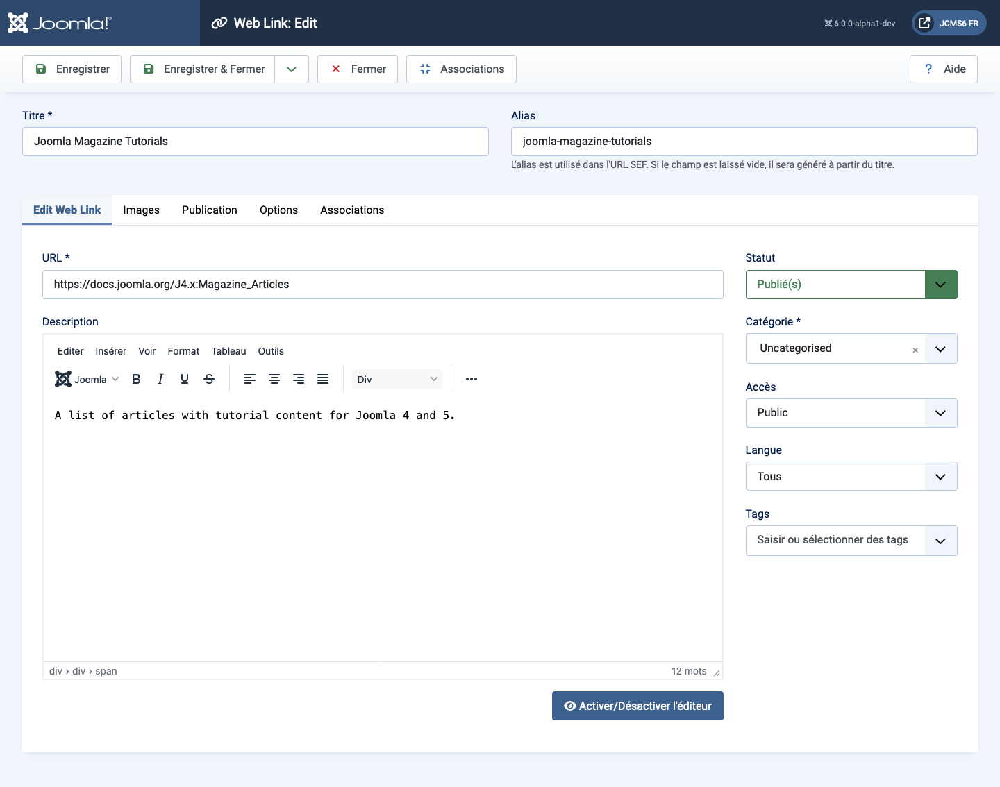
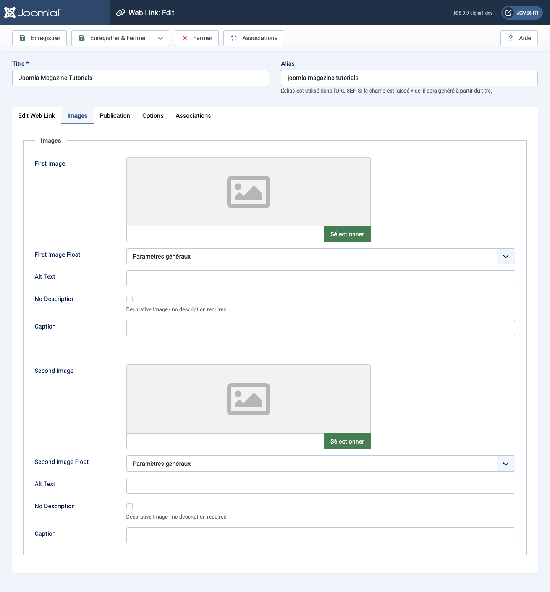
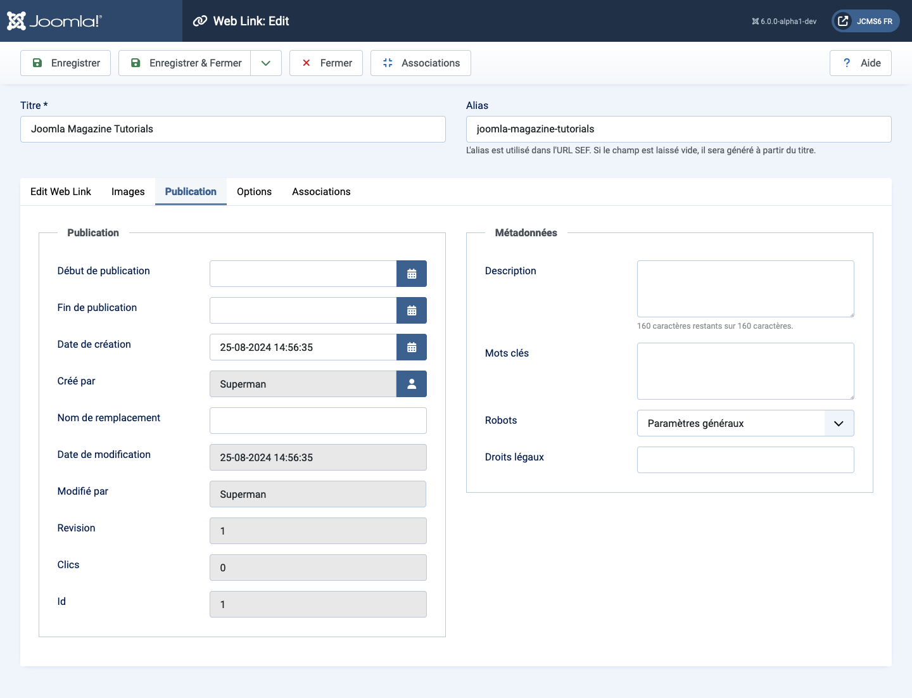
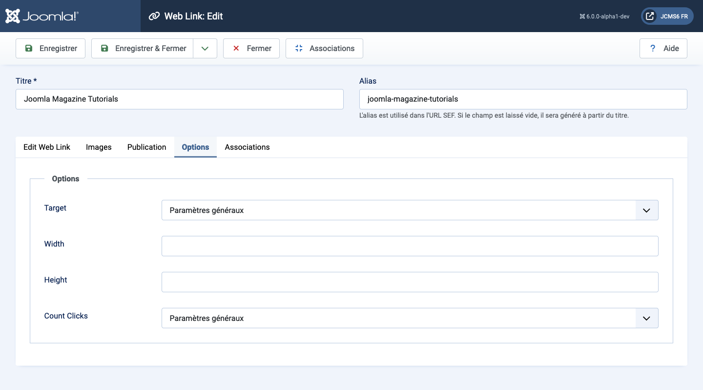

Joomla Help Screens
Lien Web : Modifier
Description
Ce formulaire est utilisé pour ajouter un nouveau lien Web ou éditer un lien existant. Notez que vous devez créer au moins une catégorie de liens Web avant de pouvoir créer votre premier lien Web.
Éléments Communs
Certains éléments de cette page sont couverts dans des articles d'aide séparés :
Comment Accéder
- Sélectionnez Composants → Liens Web → Liens dans le menu de l'Administrateur. Ensuite...
- Sélectionnez le bouton Nouveau dans la barre d'outils pour créer un nouveau lien. Ou...
- Sélectionnez un titre dans la liste des liens pour éditer un lien existant.
Capture d'écran

Champs de Formulaire
Panneau Gauche
- URL L'URL du lien Web.
- Description La description de l'élément. Les descriptions de Catégorie, de Sous-catégorie et de lien Web peuvent être affichées sur les pages web, selon les paramètres définis. Ces descriptions sont saisies en utilisant le même éditeur que celui utilisé pour les Articles.
Onglet Images

- Première Image Cliquez sur Sélectionner pour choisir une image à afficher avec cet élément sur le front-end.
- Alignement de l'image Emplacement de l'image par rapport au texte sur la page.
- Texte alternatif Texte alternatif à utiliser pour les visiteurs qui n'ont pas accès aux images. Ce texte est remplacé par le texte de la légende si ce dernier est disponible.
- Légende La légende de l'image.
- Deuxième Image Cliquez sur Sélectionner pour choisir une image à afficher avec cet élément sur le front-end.
- Alignement de l'image (Utiliser Global/Droite/Gauche/Aucun). Emplacement de l'image par rapport au texte sur la page.
- Texte alternatif Texte alternatif à utiliser pour les visiteurs qui n'ont pas accès aux images. Ce texte est remplacé par le texte de la légende si ce dernier est disponible.
- Légende La légende de l'image.
Onglet Publication

- Début de publication Date et heure de début de la publication. Utilisez ce champ si vous souhaitez saisir du contenu à l'avance et le publier automatiquement à une date ultérieure.
- Fin de publication Date et heure de fin de la publication. Utilisez ce champ si vous souhaitez que le contenu soit automatiquement changé à l'état Non publié à une date ultérieure (par exemple, lorsqu'il n'est plus applicable).
- Date de création Ce champ est par défaut à l'heure actuelle quand l'Article a été créé. Vous pouvez entrer une date et heure différente ou cliquer sur l'icône du calendrier pour trouver la date désirée.
- Créé par Nom de l'utilisateur Joomla! qui a créé cet élément. Ceci est par défaut l'utilisateur actuellement connecté. Si vous souhaitez changer cela pour un utilisateur différent, cliquez sur le bouton Sélectionner un utilisateur pour choisir un autre utilisateur.
- Alias de l'auteur Ce champ facultatif vous permet de saisir un alias pour cet auteur pour cet article. Cela vous permet d'afficher un nom d'auteur différent pour cet article.
- Date de modification (À titre informatif uniquement) Date de la dernière modification.
- Modifié par (À titre informatif uniquement) Nom d'utilisateur ayant effectué la dernière modification.
- Révision (À titre informatif uniquement) Nombre de révisions sur cet élément.
- Hits Le nombre de fois qu'un élément a été consulté.
- ID Il s'agit d'un numéro d'identification unique pour cet élément attribué automatiquement par Joomla!. Il est utilisé pour identifier l'élément en interne, et vous ne pouvez pas changer ce numéro. Lors de la création d'un nouvel élément, ce champ affiche 0 jusqu'à ce que vous sauvegardiez la nouvelle entrée, moment auquel un nouvel ID lui est attribué.
- Meta Description Un paragraphe facultatif à utiliser comme description de la page dans la sortie HTML. Cela s'affichera généralement dans les résultats des moteurs de recherche. Si saisi, cela crée un élément méta HTML avec un attribut name de "description" et un attribut content égal au texte saisi.
- Meta Keywords Entrée facultative pour les mots-clés. Doivent être saisis séparés par des virgules (par exemple, "chats, chiens, animaux") et peuvent être saisis en majuscules ou minuscules. (Par exemple, "CHATS" correspondra à "chats" ou "Chats").
- Référence Externe Une référence facultative utilisée pour lier à des sources de données externes. Si saisie, cela crée un élément méta HTML avec un attribut name de "xreference" et un attribut content égal au texte saisi.
- Robots Les instructions pour les "robots" web qui naviguent vers cette page.
- Utiliser Global : Utiliser la valeur définie dans Composant→Options pour ce composant.
- Index, Suivre : Indexer cette page et suivre les liens sur cette page.
- Pas d'index, Suivre : Ne pas indexer cette page, mais suivre les liens sur la page. Par exemple, vous pourriez faire cela pour une page de plan du site où vous souhaitez que les liens soient indexés mais vous ne voulez pas que cette page apparaisse dans les moteurs de recherche.
- Index, Ne pas suivre : Indexer cette page, mais ne pas suivre les liens sur la page. Par exemple, vous pourriez vouloir faire cela pour un calendrier d'événements, où vous souhaitez que la page apparaisse dans les moteurs de recherche mais vous ne souhaitez pas indexer chaque événement.
- Pas d'index, pas de suivi : Ne pas indexer cette page ou suivre les liens sur la page.
- Droits de contenu Décrire quels droits les autres ont pour utiliser ce contenu.
Onglet Options

- Cible Comment ouvrir le lien. Les options sont :
- Ouvrir dans la fenêtre parente. Ouvrir le lien dans la fenêtre actuelle du navigateur, permettant une navigation avant et arrière.
- Ouvrir dans une nouvelle fenêtre. Ouvrir le lien dans une nouvelle fenêtre du navigateur, permettant une navigation avant et arrière.
- Ouvrir dans une popup. Ouvrir le lien dans une fenêtre popup.
- Modal. Ouvrir le lien dans un écran modal.
- Largeur Largeur de la fenêtre IFrame. Entrez un nombre de pixels ou un pourcentage (%). Par exemple, "550" signifie 550 pixels. "75%" signifie 75% de la largeur de la page.
- Hauteur Hauteur de la fenêtre IFrame. Entrez un nombre de pixels ou un pourcentage (%). Par exemple, "550" signifie 550 pixels. "75%" signifie 75% de la hauteur de la page.
- Compter les clics Indique si vous souhaitez ou non suivre le nombre de fois que ce lien web a été ouvert.
Traduit par openai.com